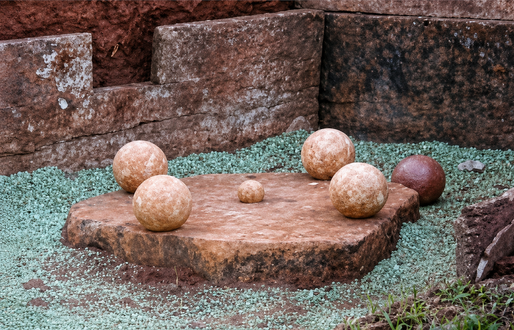

Estrutura do jogo
A bocha “Quarenta e Oito” é uma modalidade disputada em um cepo com diâmetro mínimo de 75 centímetros e máximo de 1 metro, elevado entre 5 e 10 centímetros acima do solo.
No centro do cepo é colocado o balim, enquanto as quatro bochas são posicionadas em forma de cruz, mantendo distância de 24 centímetros entre elas e o balim.
O objetivo da modalidade é derrubar as bochas e o balim, acumulando pontos conforme o posicionamento de cada peça no cepo.

Organização das bochas e do balim sobre o cepo.Sistema de pontos
A modalidade possui um sistema específico de pontuação, no qual cada posição sobre o cepo possui um valor diferente.
Frente
A bocha posicionada na frente possui valor de 2 pontos.
Esquerda
A bocha localizada à esquerda vale 4 pontos.
Direita
A bocha posicionada à direita vale 6 pontos.
Traseira
A bocha localizada na parte de trás possui valor de 8 pontos.
Balim
O balim central possui o maior valor, totalizando 12 pontos.
Total
A soma total dos pontos resulta em 48, originando o nome da modalidade.
Como acontecem as partidas
A disputa ocorre em duplas, sendo que cada atleta realiza oito arremessos, divididos em duas séries de quatro bochas.
Ao final das séries, os pontos obtidos por cada dupla são somados para definir a equipe vencedora da partida.
Em caso de empate, novos arremessos são realizados até que haja desempate.
Arremessos e validações
A distância da linha de arremesso varia conforme a categoria, sendo de 12 metros para peões e 9 metros para prendas, peões até 12 anos e peões acima de 70 anos.
Durante o arremesso, o atleta pode apenas pisar sobre a linha, sem ultrapassá-la completamente, sob pena de anulação da jogada.
Para que o arremesso seja considerado válido, a bocha deve atingir diretamente outra bocha, o balim ou a parte superior do cepo.
Não são válidos arremessos em que a bocha toque o solo antes do cepo.
Em cada jogada válida, são computados os pontos das peças derrubadas, retornando-as posteriormente ao local de origem.